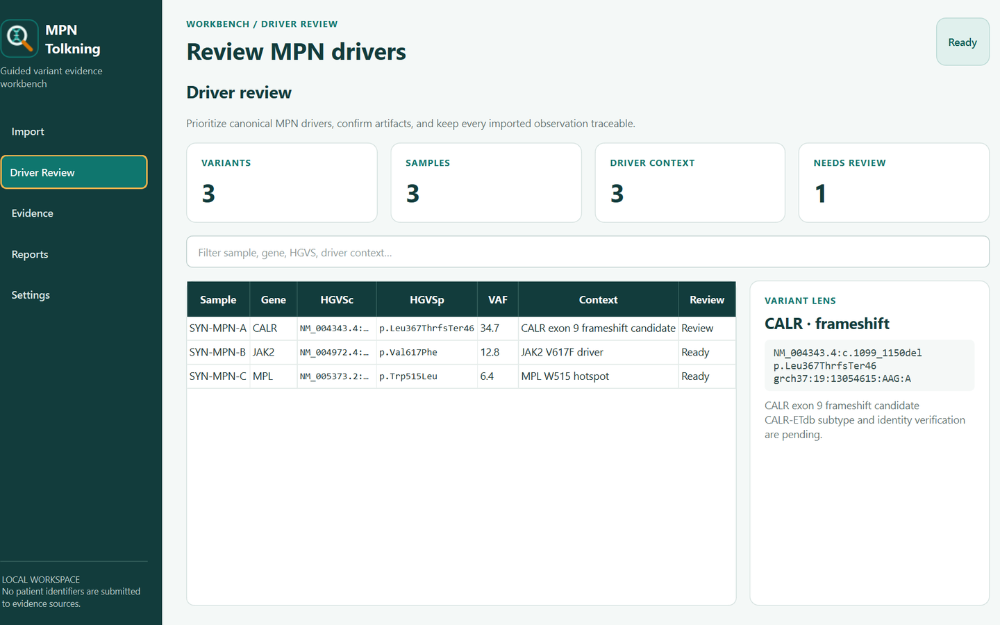

1
Import
Read semantic Archer TSV columns, retain every original value, and surface unexpected genes.
Import processed Archer panel variants, focus the JAK2/CALR/MPL review, collect traceable database evidence, and produce incremental Excel workbooks on a Windows workstation.
The app preserves the source data, makes driver context visible, and treats database evidence as incomplete until the variant identity is verified.
Read semantic Archer TSV columns, retain every original value, and surface unexpected genes.
Prioritize JAK2 V617F/exon 12, CALR exon 9 frameshifts, and MPL W515 context.
Use isolated Edge profiles, exact identity checks, and readable screenshot validation.
Retry only incomplete patient/variant/provider units after an interruption.
Create a review workbook and incremental per-patient MPN evidence workbooks.
Keep the research-use disclaimer and review status attached to every output.
CALR-ETdb receives only HGVS cDNA. The remaining sources use pseudonymous or variant-only queries and require verified result context.
Patient identifiers stay out of database queries and evidence filenames. Provider passwords are never written to app settings.
Five focused pages keep import, driver review, evidence, reports, and settings understandable at a glance.
